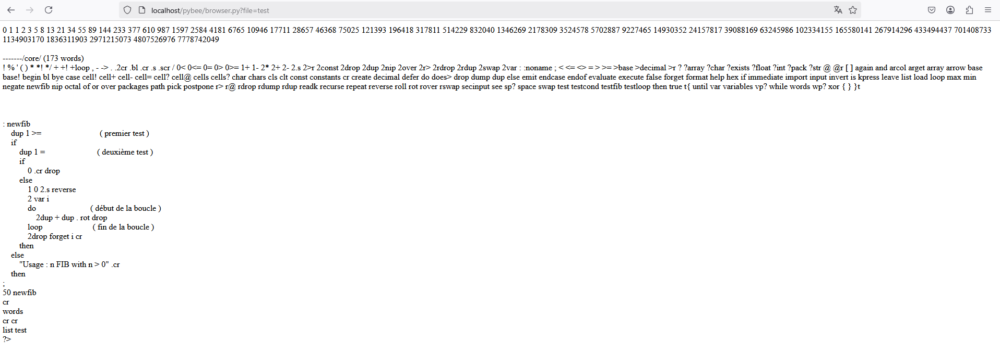

Précédent : VII. Console | Index | Suivant : IX. Système de fichiers
Vous pouvez choisir d'utiliser la console pour réaliser vos programmes. Cependant, vous pouvez rediriger la sortie standard vers une page web en utilisant l'outil mis à votre disposition qui est, dans votre navigateur préféré : http://localhost/pybee/browser.py?file=my_filename&path=my_path
Le paramètre 'file=my_filename' ne doit pas contenir l'extension de votre fichier mais doit être un fichier donc l'extension est .btl
Le paramètre 'path' de l'url est optionnel. Vous avez, au choix, 3 solutions pour construire cette url :
Avec ce mécanisme, vous pouvez déposer un ensemble de fichiers n'importe où sur votre disque. Les fichiers Beetle que vous créez pour vos sites sont totalement cachés d'un browser. Ce paramétre 'path' ne doit pas comporter de / à la fin
Exemple :
Si vous créez un répertoire projet1 dans userarea et que vous y mettez un fichier myprogram.btl, votre
url sera la suivante : http://localhost/pybee/browser.py?file=projet1/myprogram
De ce fait, vous contrôlez entièrement l'arboscence de votre site ou projet.
Autre exemple :
En admettant que vous avez créé un fichier test.btl contenant :
: newfib
dup 1 >= ( premier test )
if
dup 1 = ( deuxième test )
if
0 .cr drop
else
2 var i
1 0 2dup . . swap rot i
do ( début de la boucle )
2dup + dup . rot drop
loop ( fin de la bloucle )
2drop forget i cr
then
else
"Usage : n FIB with n > 0" .cr
then
;
50 newfib
cr
words
cr cr
list test
Lorsque vous tapez : http://localhost/pybee/browser.py?file=test vous obtenez :

Si vous commettez une erreur de syntaxe, vous afficherez les erreurs dans la page web. Ainsi vous pouvez utiliser un autre canal de sortie que la simple console.
Précédent : VII. Console | Index | Suivant : IX. Système de fichiers